| 日付 | 2025年6月21日（土） |
|---|---|
| 山域 | 南アルプス |
| メンバー | 家族（妻） |
| 山行形態 | 日帰り |
| アクセス | 車 |
| ルート (Map) | 林道池の茶屋線分岐 (9:16) - (9:43) 登山口 - (10:36) 源氏山 (10:53) - (11:40) 大峠山 (12:14) - (12:41) 登山口 - (13:19) 林道池の茶屋線分岐 |
源氏山は南アルプスの東に位置する山だ。
南アルプスを眺めるのに良い位置にありながら、残念ながら展望は良くない。
快晴予報でもないので、若干展望がある程度の山で十分だろう。
登山口の標高がすでに1600mを越えているので、この時期でも暑くはなさそうだ。
登山口の林道池の茶屋線分岐の駐車場に車を停める。標高1670m。
小さな駐車スペースに車を3台停めることができる。
標高が高いので非常に涼しい。
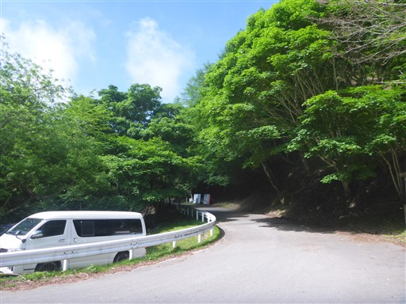
展望台への道があるが、帰りに寄ることにしてまずは源氏山に向かう。
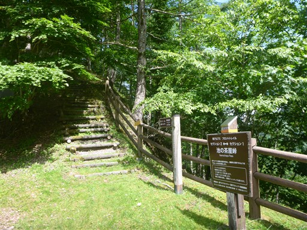
しばらく林道を歩くと分岐があり、砂利道に入って行く。
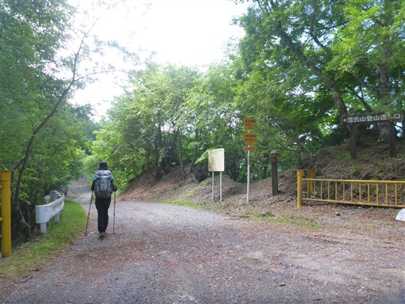
途中で素晴らしい展望が広がる。正面は悪沢岳。左奥は赤石岳だ。
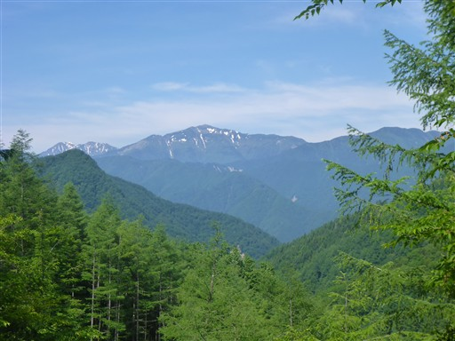
林道脇の法面は苔に覆われている。
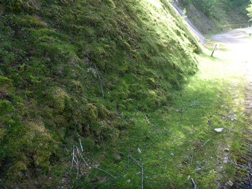
法面に巨大な穴が開いている。傷んでいるが道は整備されている。
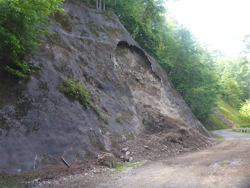
源氏山の登山口に到着。
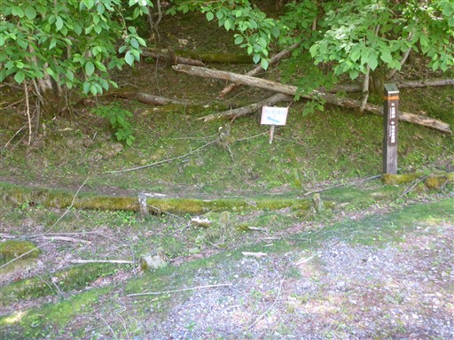
森の中を登っていく。ハルゼミの声がこだましている。
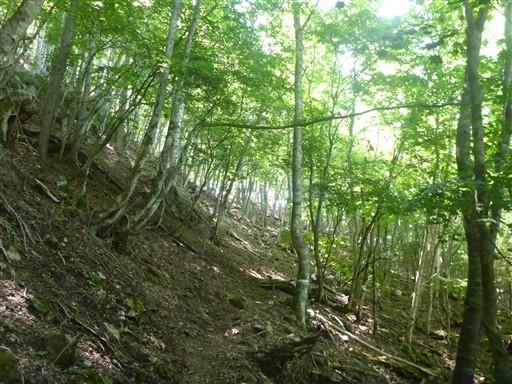
大峠山との分岐点に到着。まずは源氏山を目指す。
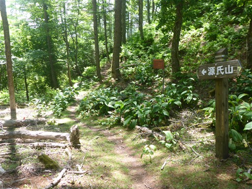
目指す丸い頭の源氏山が見えている。
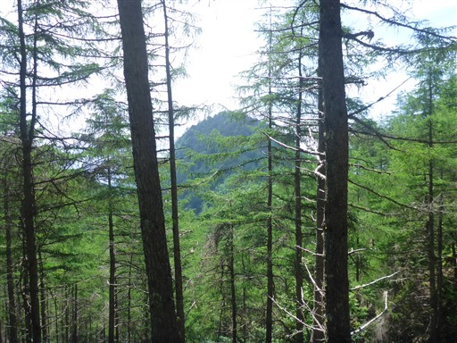
この辺りは少し道が細い。
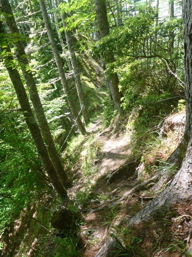
トラバース道から尾根道になる。意外に痩せ尾根だ。
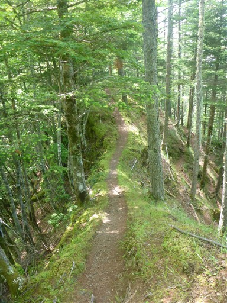
放置されたワイヤーや滑車。植林は見当たらないが、林業に使っていたのだろうか？
使用を終えたのなら片付けてほしいところだ。
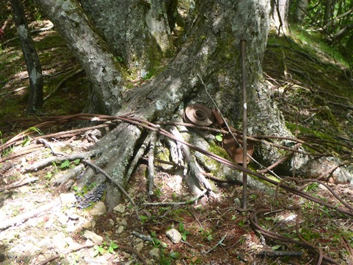
あまり歩く人がいないのか、登山道は苔に覆われている。
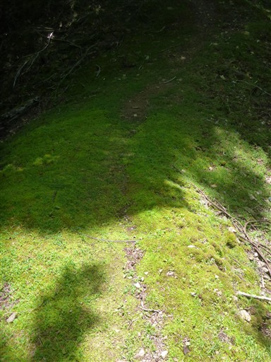
周囲は美しい樹林帯が広がる。
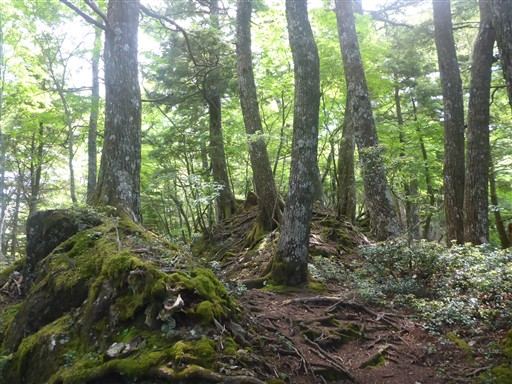
源氏山の山頂に到着。標高1827m。
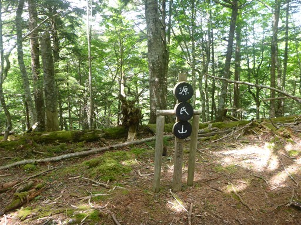
樹林帯に覆われた、全く展望の広がらない山頂だ。
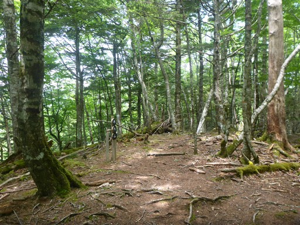
富士山展望台の標識があったので行ってみる。
樹林の隙間から何とか富士山の頭が見える。
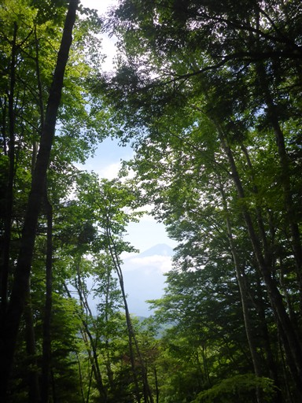
富士山を拡大。今日は雲が多いが、頭だけでも見られてよかった。
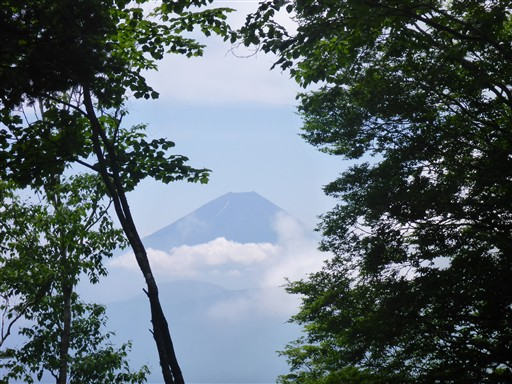
源氏山を下山し、今度は大峠山に向かう。
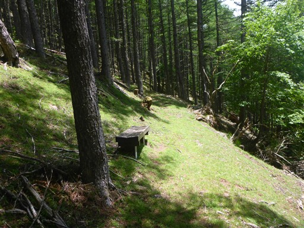
分岐点から20分ほどで大峠山の山頂に到着する。標高1908m。
本日の最高峰だ。
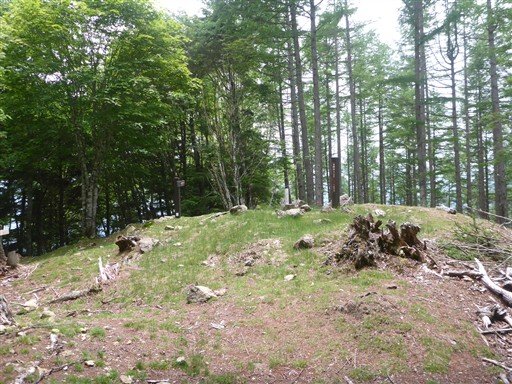
山頂に石碑があり、見てみると「強歩大会之地」と記載されている。
源氏山にも同じような石碑があった。ただの大会でわざわざこんな石碑を置いたのか…
昭和27年と書かれている。戦後の復興期だ。
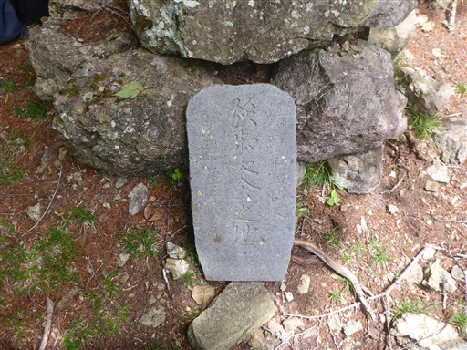
林道まで戻ってくる。
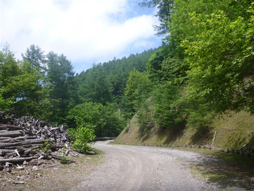
道路脇に切り株が大量に積みあがっている。
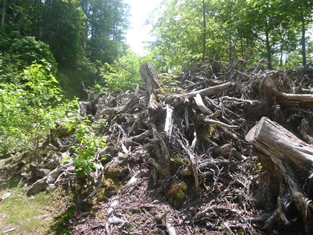
帰りは当初の予定通り、展望台への道に入って行く。

展望台に到着。
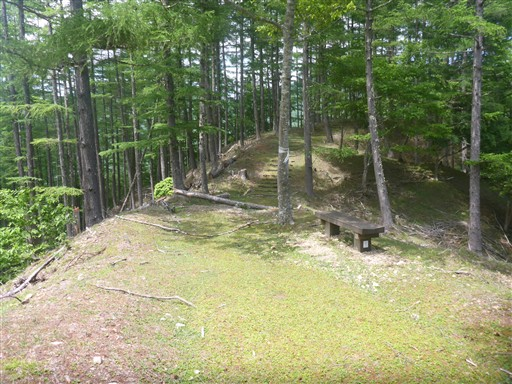
残念ながら南アルプス方面は雲に覆われていてよく見えない。
朝に来ておくべきだった。
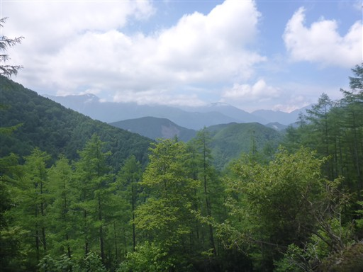
富士山も少しだけ見える。
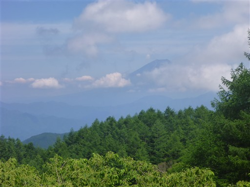
駐車場所まで降りてくる。
地味な山ではあったが、人通りが少なく、のんびり涼しい山を歩くことができた。
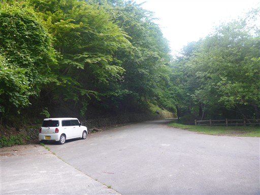